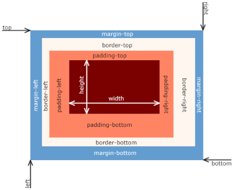
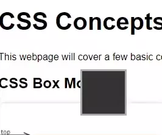

This webpage will cover a few basic concepts regarding Cascading Style Sheets.
CSS Box Model
The CSS Box Model. By Matthias Apsel, CC0, Wikimedia Commons
The CSS Box model contains 4 major parts:
- Content
- Padding
- Border
- Margin
Content is whatever you want to actually display, whether that be text or image data. Imagining an actual box that you'd ship something in, content would be the item that you're shipping. Padding is space between the content and the border. You can think of it like packing material. The border is a line that separates padding and margin. Think of it like the actual cardboard edges of our analogous box. Finally, margin is the amount of space between the border of the current element and other elements, or in our analogy, how much room we allow between boxes. We will elaborate on padding and margin in the upcoming section.
Padding
Padding adds space between the inner content and outer edges of an element. If an element has a defined width or height, the content within that element will fill to that width or height, and then padding will add space beyond that.
Margin
Style Changes on Hover
To "hover" over an element means to move your mouse cursor over its content, padding, or border. Resting your mouse cursor over an element's associated margin does not count as hovering. While the user is hovering over some element, we can ask the browser to respond in some way through HTML or CSS. You've already seen this done through the use of the HTML "title" attribute showing a small tooltip when a user mouses over an element it's applied to (such as a link). Now, with CSS you can do many more things of that nature.
Color Contrast
The World Wide Web Consortium (W3C) standard setting body created an accessibility standard dubbed WCAG, which stands for Web Content Accessibility Guidelines. Part of those guidelines go over color contrast, rating the differences between text color and its background. While calculating color contrast ratios is beyond the scope of this page, it boils down to two ratings: AA and AAA. The WCAG double-A rating requires (among other things) a contrast ratio of at least 4.5:1 for normal-sized text. The WCAG triple-A rating requires a contrast ratio of at least 7:1 for normal-sized text. The following table will show a few examples.
| Text | Background Color | Text Color | Contrast Ratio | Rating |
|---|---|---|---|---|
| Black and White | #FFFFFF | #000000 | 21:1 | AAA |
| White and Gray | #636363 | #FFFFFF | 6:1 | AA |
| Yellow Bluish | #3333FF | #FFFF00 | 6.39:1 | AA |
| Red and Green | #00FF00 | #FF0000 | 2.91:1 | None |
| Sea Greens | #00FFB3 | #00D5FF | 1.33:1 | None |
Position
The position property affects how elements are placed on a webpage. We will cover three types: Relative, Absolute, and Fixed position.
Relative Position
Hover over the text to watch the box move relative to its original position.
Absolute Position
Hovering over this box to simulate a page-resize won't move this gray box. Absolutely positioned elements are strictly positioned to the top-left of the element they're stuck to.
Fixed Position
Fixed position will position an element according to the user's screen instead of according to any element on the page. This would be annoying to demonstrate here, since it would be like putting a sticky-note on your monitor. An animated .webp might do the trick though.
Shadows
Text shadows and box shadows can be applied to various elements to give your webpage a sense of depth and to draw attention to certain things. An example of box-shadow property follows.
Horizontal Property
Box shadows can be positioned relative to the element they're applied to. These examples show a black shadow positioned by varying degrees to the right of a red box with an orange border.
Vertical Property
Shadows can also be positioned vertically relative to the element that they are applied to. This example shows 2 boxes, one with a shadow adjusted vertically by 20px, another by 40px.
Blur Property
Finally, shadows can be blurred to varying degrees. Here, the shadows are directly under their applied element but blurred to varying degrees.